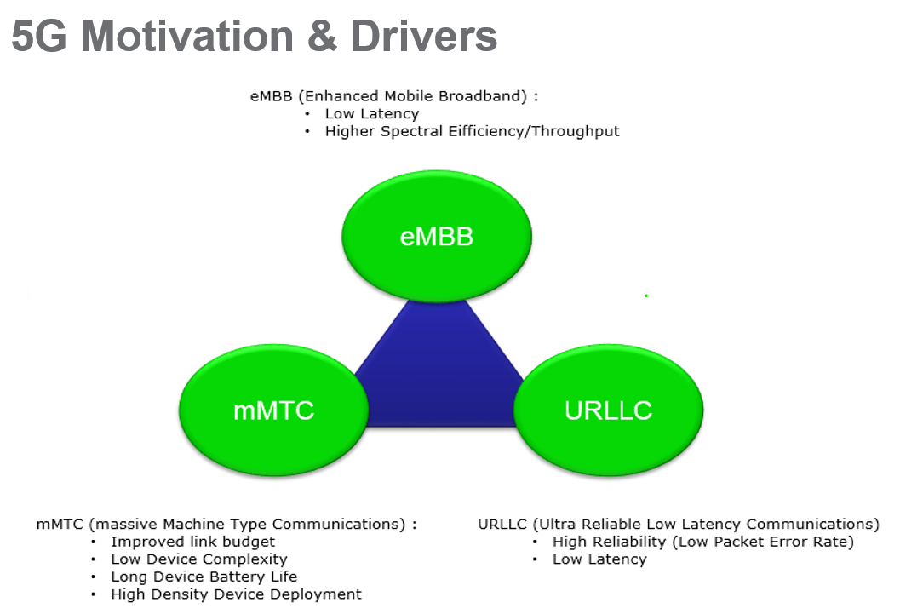
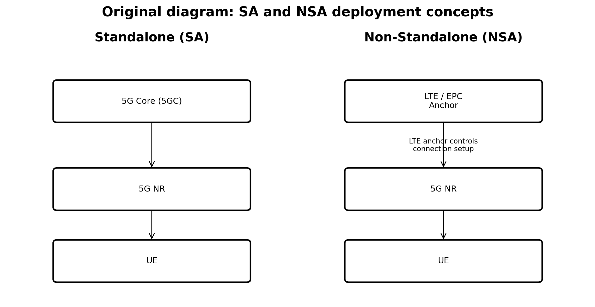
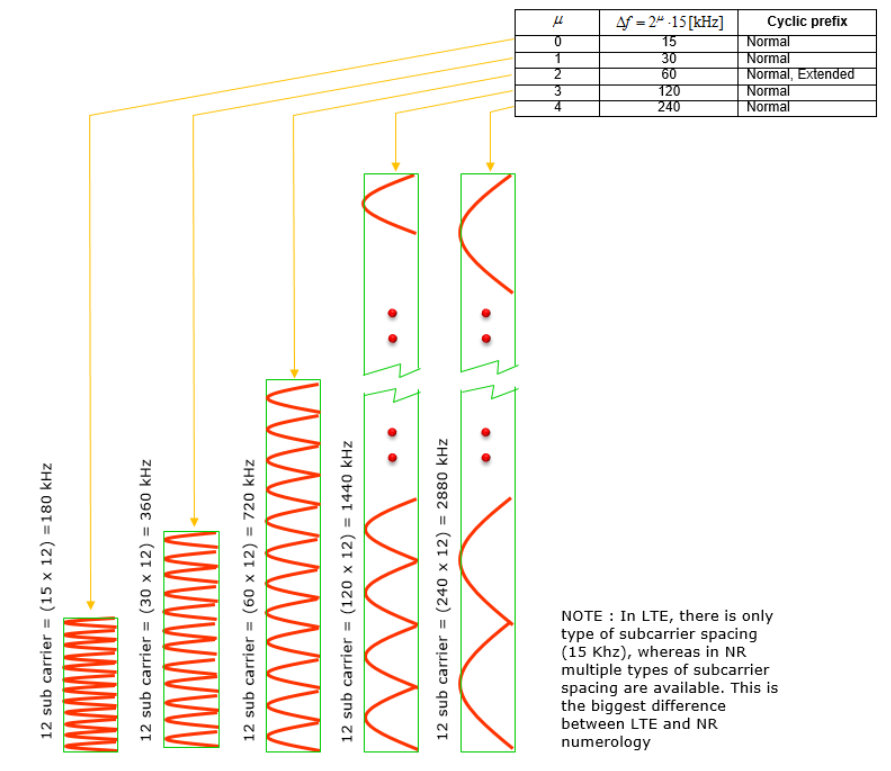
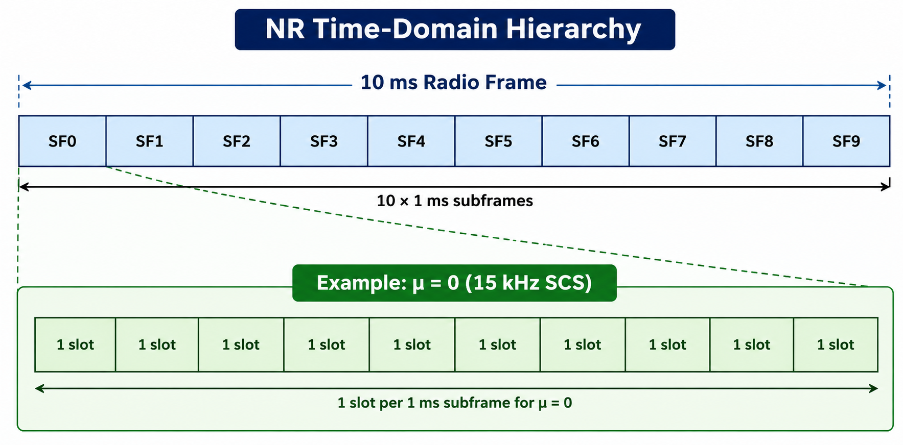
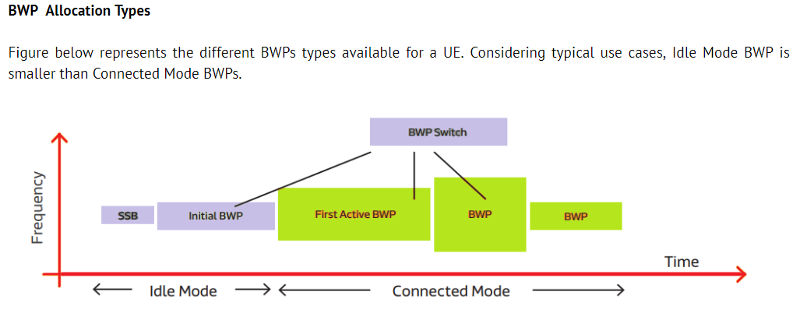
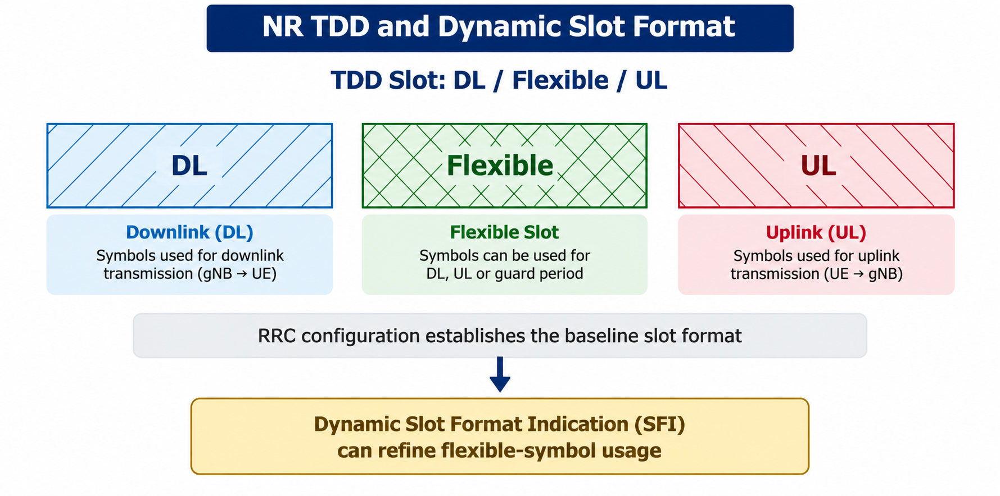
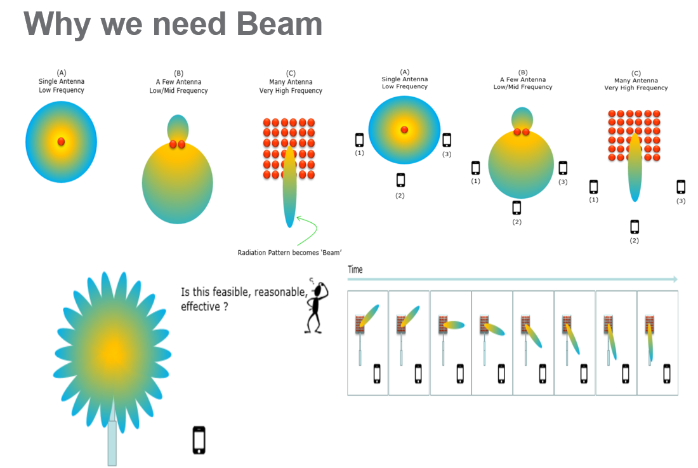

5G / NEW RADIO
5G NR Technical Overview
Complete web-format presentation of the supplied 5G NR document. The original numbered topics, theory, bullet points and diagrams are retained.
01
1. 5G Motivation and Drivers

5G NR is designed as a scalable radio technology that can support very different service requirements.
- eMBB: high throughput and increased capacity for broadband applications.
- mMTC: very high device density, low complexity and low power requirements.
- URLLC / mission-critical services: very low latency and very high reliability.
- The common theme is flexibility: radio resources should scale according to application needs.
02
2. 5G NR Deployment: SA and NSA

Standalone (SA)
- 5G NR connects to the 5G Core (5GC).
- This is the native end-to-end 5G architecture.
- It enables 5G Core capabilities and avoids dependence on an LTE anchor.
Non-Standalone (NSA)
- LTE/EPC remains an anchor while NR is introduced.
- This supports gradual 5G deployment without immediately replacing the existing LTE core.
- When troubleshooting, identify SA vs NSA first because registration, control-plane and bearer procedures differ.
03
3. Scalable NR Numerology

NR changes the subcarrier spacing (SCS) according to the numerology index μ:
Δf = 15 × 2μ kHz
Δf = 15 × 2μ kHz
- μ=0 15 kHz →
- μ=1 30 kHz →
- μ=2 60 kHz →
- μ=3 120 kHz →
- μ=4 240 kHz →
- For normal cyclic prefix operation, the number of slots in a 1 ms subframe increases as numerology increases. Higher SCS gives shorter OFDM symbols and shorter slot durations, which can help latency but introduces different RF/coverage and implementation trade-offs.
04
4. NR Frame, Slot and Mini-slot Concepts

NR time-domain structure
- A radio frame is 10 ms.
- There are 10 subframes of 1 ms each.
- The number of slots per subframe depends on numerology.
- Normal cyclic-prefix slots use 14 OFDM symbols.
- Mini-slots can use fewer symbols and provide more flexible transmission opportunities.
- Self-contained slots can combine DL, guard and UL resources to reduce turnaround latency.
05
5. Channel Bandwidth and Bandwidth Parts (BWP)

A BWP is a contiguous set of PRBs configured for a UE.
- A UE may be configured with multiple BWPs, with one active BWP used for a given direction at a time in the operating concept.
- A narrower active BWP can reduce the amount of bandwidth the UE needs to process.
- BWP configuration is therefore useful for power efficiency, device capability differences and traffic adaptation.
- In log analysis, always check the carrier bandwidth and the currently active BWP.
06
6. NR Waveforms and TDD

OFDM-based waveforms
- CP-OFDM is a core NR waveform.
- DFT-s-OFDM is also supported, particularly for uplink scenarios.
- The cyclic prefix helps handle multipath-induced inter-symbol interference.
- Waveform and numerology choices affect latency, spectral efficiency, coverage and implementation.
TDD
- NR TDD can use Downlink (D), Uplink (U) and Flexible (F) symbols.
- RRC signaling provides semi-static configuration.
- Dynamic Slot Format Indication (SFI) can provide additional control over flexible symbols.
- This allows DL/UL resources to adapt more closely to changing traffic demand.
07
7. Massive MIMO and Beam Sweeping

Massive MIMO and beamforming
- Massive MIMO uses many antenna elements to create spatially directed transmission.
- Beamforming concentrates energy in a selected direction, improving link quality and capacity.
- Beam sweeping scans different spatial directions to discover or maintain suitable beams.
- Beam changes can affect RF measurements, throughput, mobility and link stability.